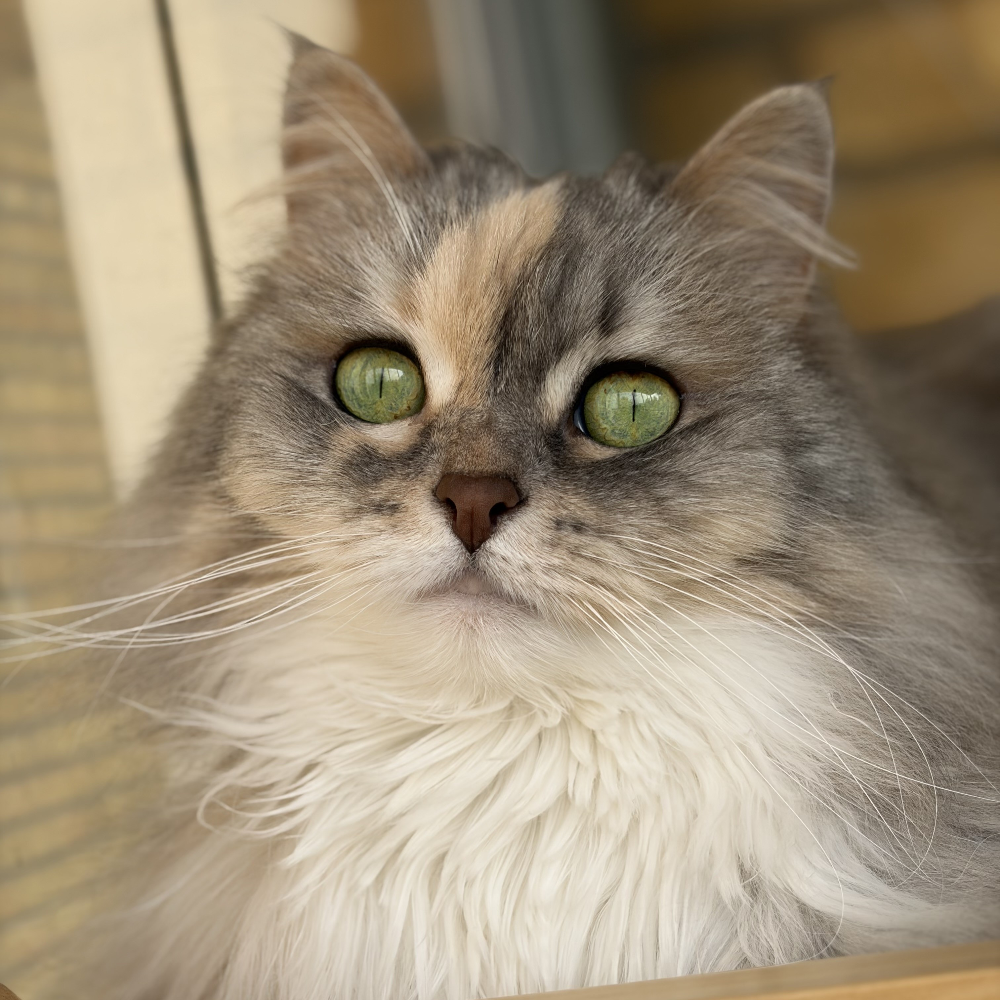

S*Sibelinaz Flinga
Flinga är hemmets äldsta katt med sina åtta år. Hennes gröna ögon är bedårande, liksom hennes speciella färg, blåsköldpadda silverspotted vit. Hon är också hemmets drama-queen, och är husses katt upp i dagen. Varje kväll ska hon sova nära husse. Då sover också husse som bäst.
Läs mer om Flinga